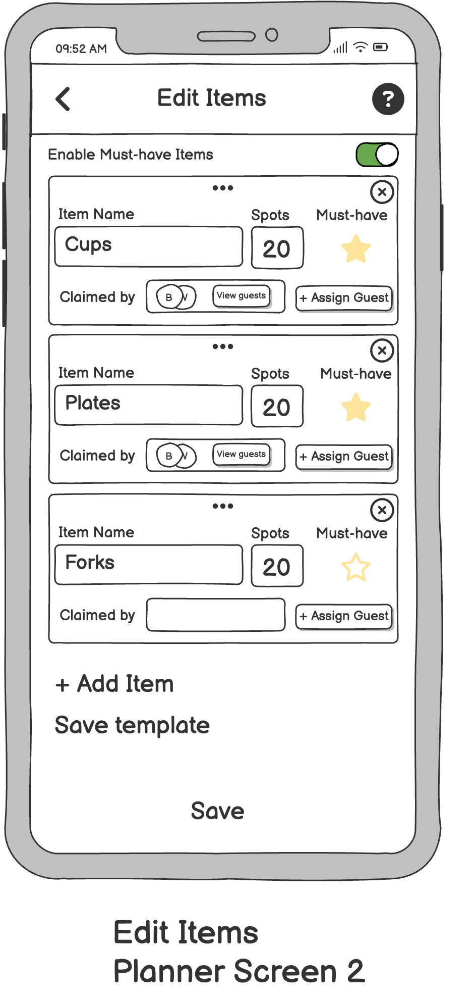

Iterative Redesign
Designed by Partiful 3 Team:
Yemisi Gbenebor,
Shufan He,
Kseniia Dolgopolova, and
Wangdrak Dorji.
This guided project was completed in collaboration with industry partners, including mentorship from Partiful team members and design professionals from Google Ventures. Our goal was to explore how Partiful—a social event planning app popular among young professionals—could gain traction with college students.
Problem: The app is popular among young working adults but lacks visibility among college students. The challenge is identifying a feature with strong virality potential on college campuses. Our goal is to increase adoption of the app among college students.
Importance: College students frequently host events, especially parties, and represent a large, untapped user base.
Proposed Solution: Introduce a potluck feature that allows event guests to contribute items and resources for events. Student-organized events typically have limited budgets and often rely on contributions from attendees. This functionality is not offered by major competitors like Eventbrite or Google Calendar.
Sketching & Wireframing
Sketches ✏️
Key Ideas from Sketches
- Entry point from the event page.
- Option to mark an event as a potluck.
- Hosts can assign potluck items or let guests choose.
- Guests can view who’s bringing what for the potluck.
- Hosts can list what each guest will need for themselves in order to participate. (e.g., all guests need swimwear for beach event)
- Guests can request help for items.
- Gamification feature to allow guests "level up" after attending many events.
Wireframes üñºÔ∏è


What's Incorporated From the Sketches
- Potluck toggle and item list added to the event page.
- Guests can claim items and host can assign items.
- Clear visual display of who is bringing each item.
- Shared requirements field included.
New Additions During Wireframing
- Party Genie Templates: Pre-fill common items for quicker setup.
- Save Template: Reuse item lists for recurring event types.
- Must-Have Items: Highlight priority items in long lists.
Design Considerations
The challenge was balancing useful functionality with simplicity. We prioritized ease of use over advanced controls to keep the interface intuitive for student users.
We left out a few ideas from the sketches because we thought they might be a little overwhelming and we wanted to prioritize the potluck idea. These include gamification, what each person needs to bring for themselves, and asking other guests for help.
Incorporating Wireframing Critique
Product Feedback üõ†
As we worked on implementing a new potluck feature for Partiful, we
received thoughtful feedback on our low fidelity prototype from Jess
Eames, who is the Head of Business & Product Operations at Partiful:
-
Design features as horizontal capabilities usable across event types
(e.g., ride-sharing, fundraiser tasks).
-
Hosts should be able to edit or assign sign-ups, like with RSVPs,
since guests often coordinate outside the app.
-
Allow multiple people to claim the same item or task (e.g., drinks,
desserts, shared drivers).
-
Let guests see what others have signed up for to encourage
coordination and social engagement.
-
Rather than having users input quantities with unclear units (e.g., “4
chickens”), allow hosts to define the number of people needed per item
or task. Hosts can then optionally include notes for specific
instructions.
During our wireframe critique session with Caroline Walters who is a
program manager for the Portfolio Operations team at Google Venture, we
received high-level feedback. Instead of narrowing in on UI changes, we
were encouraged to think broader, strategic questions like:
- How do students currently organize potlucks?
-
What key pain-point do college students face that isn’t addressed by
Partiful today?
-
What’s stopping them from using Partiful today? Is it awareness,
usability, or relevance?
-
What made previous apps go viral on campus, and how can we replicate
that?
Post-Critique Takeaways üîç
After the session, upon discussing about next steps, in addition to
iterating on our potluck feature we realized that:
-
A lot of students simply haven’t heard of Partiful and don’t know what
Partiful offers that other apps don’t.
-
We decided to dig deeper into the student mindset through user
research and sent out a Google Form survey to better understand their
event planning behavior.
-
The current marketing could improve with a referral program to reward
users who invite friends to incentivize app engagement.
User Research
Hi-Fi Prototype
Iterative Design Decisions
Feedback from mentors and company founders shaped the final hi-fi
prototype. Positive responses highlighted strong features, while
constructive suggestions helped refine usability, clarity, and flow. We were able to implement most suggestions (except a seperate screen for RSVPs).
Positive feedback
❤️ "Contributions" is a good entry point for list creation.
❤️ Social layer of claimed items in activity feed is good.
❤️ Badges to gameify guest controbutions are great, and can extend
current profile badge feature in Partiful.
❤️ Refer a friend feature is nice, something that the comapny would like
to continue doing.
❤️ Sign-up feature looks more flexible.
❤️ Button for refferal system looks cute and clickable.
Room for Improvement
üí≠ What would a list look like if it started from a template?
üîß Include only one control for a planner to designate "Must-Have"
items, two is confusing.
üîß Default text for notes is too suggestive, consider just using
"Notes".
üîß When a planner edits items, including "claimed by" and "assign
guests" mixes guest and planner actions making the UX confusing.
üîß To minimize number of screens, consider making Assign Guests a pop-up
screen - not full.
üîß Must-have desgination shouldn't be clickable for guests, only
planners can define this.
üîß Transparent boxes look clickable for guests, consider a different
state representation.
üîß Spots claimed entry point in guest RSVP should be a seperate screen
to ensure users do not overlook sign-up.
üîß Assign Items icon looks like a clipboard, this can be a toggle.
üîß Put practical uses for list templates at the top (car sign up,
potluck, housing…)
Final Prototype
The final prototype demonstrates two primary user flows: one tailored
for planners to create and manage event lists, and another designed for
guests to select and claim items to bring. Select which flow to interact
with using the "Flows" control panel on the left.
User Flows
Planner
-
Create Custom Lists: Planners can easily create customizable lists
for any event, allowing guests to sign up for specific items.
-
Enhanced Templates: The prototype extends Partiful's template
feature, supporting item sign-ups tailored to various event types.
-
Manage Guest Contributions: Planners have the ability to edit the
item list and commitments. This includes limiting the amount of
users that can sign up for each item, and highlighting must-have
items.
Guest
-
Claim Items: Guests can claim responsibility for bringing specific
items to an event.
-
Add Custom Items: Guests can add new, custom items to the list,
ideal for potluck events.
-
Manage Personal Contributions: Guests have the ability to sign up,
edit their item commitments, and view overall contributions
clearly.
-
Implemented a flexible, horizontal feature enabling planners to
create adaptable lists for any event type.
Future Work